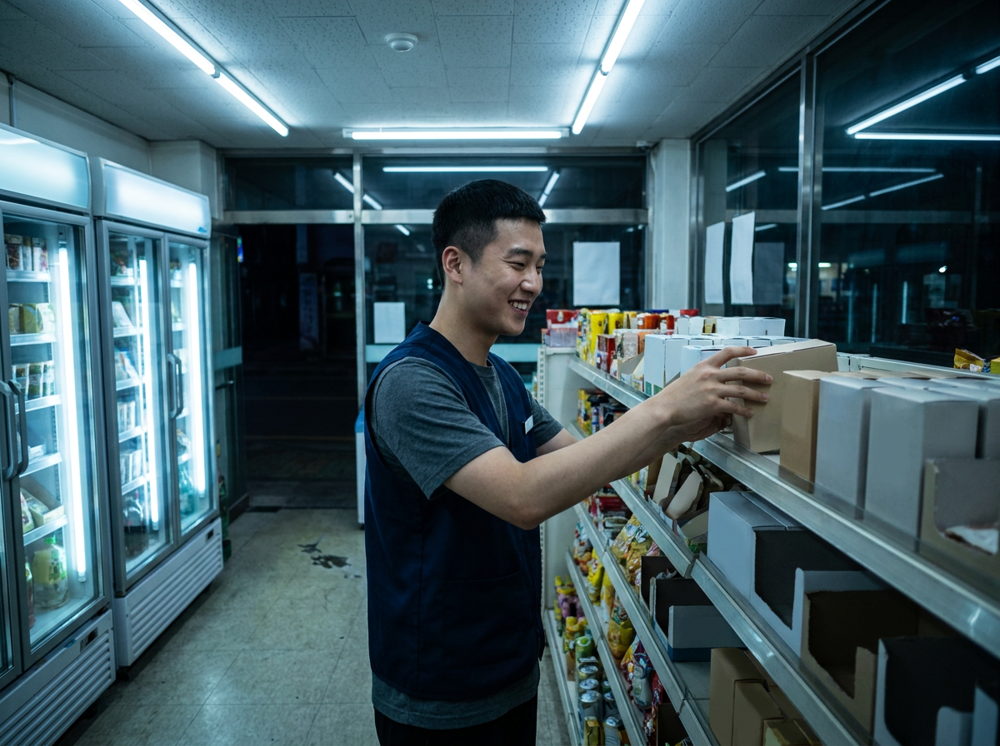
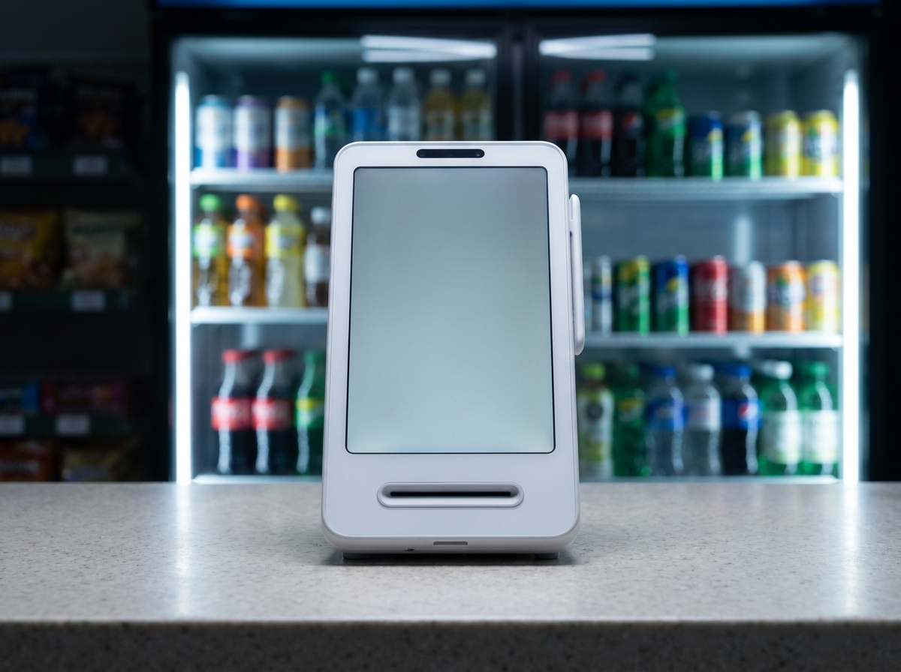
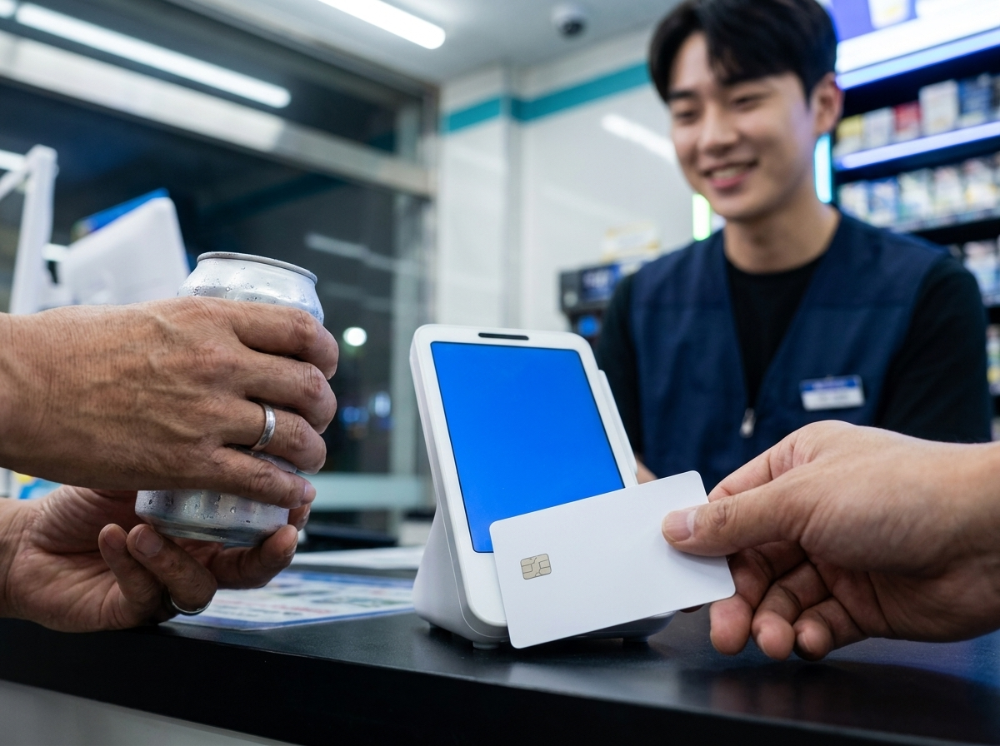

휴가철에 손님 줄었을 때, 8월 매장을 이렇게 나눠 쓰면 버팁니다
결론부터 말씀드리면, 여름 휴가철 매출은 모든 매장이 똑같이 줄어드는 것이 아니라 상권에 따라 갈립니다. 주택가나 오피스가처럼 생활 인구가 빠져나가는 자리는 한산해지고, 관광지와 번화가처럼 사람이 모이는 자리는 오히려 1년 중 가장 바빠집니다. 그래서 8월에 가장 먼저 할 일은 대책을 세우는 것이 아니라, 내 매장이 어느 쪽인지를 지난해와 최근 몇 주의 결제 기록으로 확인하는 일입니다. 빠지는 쪽이면 손님 대신 매장을 손보는 시기로 쓰고, 몰리는 쪽이면 피크 시간대에 계산이 밀리지 않도록 준비하면 됩니다. 이 글에서는 그 판단을 어떤 숫자로 하는지, 그리고 시기별로 무엇을 해야 하는지를 정리해 드리겠습니다.

여름 매출은 줄어드는 게 아니라 갈립니다
"여름이라 손님이 없다"는 말은 상권을 빼고 보면 반만 맞습니다. 휴가철에 사람은 사라지는 것이 아니라 이동합니다. 살던 동네와 일하던 사무실을 잠시 비우고 바다와 산, 축제가 열리는 도심으로 옮겨 갑니다. 같은 8월에도 어떤 매장은 한가하고 어떤 매장은 가장 바쁜 이유가 여기에 있습니다.
주택가 상권은 가족 단위 손님이 통째로 빠져나가면서 저녁 매출이 먼저 흔들립니다. 오피스가는 휴가와 단축 근무가 겹치며 점심 피크가 얇아집니다. 반대로 관광지와 해수욕장 인근, 역세권 번화가, 축제와 행사 주변은 평소 오지 않던 손님까지 밀려듭니다. 내 매장이 빠지는 쪽인지 몰리는 쪽인지에 따라 8월에 써야 할 시간과 비용의 방향이 달라집니다.
여기에 폭염이 겹치면 흐름이 한 번 더 꺾입니다. 한낮에는 바깥 활동이 줄어 유동인구가 눈에 띄게 빠지고, 해가 진 뒤 저녁과 심야로 손님이 옮겨 가는 경향이 나타납니다. 매출 총액만 보면 그냥 줄어든 것처럼 보이지만, 시간대별로 쪼개 보면 낮이 빠지고 밤이 늘어난 이동인 경우가 적지 않습니다. 총액이 아니라 시간대를 봐야 하는 이유입니다.
내 매장이 어느 쪽인지, 데이터로 먼저 확인하세요
감으로 판단하기보다 숫자로 확인하는 편이 빠릅니다. 볼 것은 세 가지입니다. 첫째, 지난해 7~8월과 올해 같은 기간의 주차별 흐름입니다. 둘째, 요일별 매출 순위가 평소와 달라졌는지입니다. 셋째, 시간대별 매출의 무게중심이 낮에서 밤으로 옮겨 갔는지입니다. 포스나 결제단말에 쌓인 결제 기록만 있으면 이 세 가지는 바로 뽑아볼 수 있습니다.
아래 표는 상권별로 여름에 흔히 나타나는 흐름과, 그때 먼저 확인하면 좋은 데이터를 정리한 것입니다. 매장마다 사정이 다르니 방향을 잡는 참고로만 봐 주세요.
| 상권·입지 | 휴가철에 흔한 흐름 | 먼저 볼 데이터 | 8월의 우선순위 |
|---|---|---|---|
| 주택가 상권 | 가족 단위 이탈로 저녁부터 빠짐 | 요일별·저녁 시간대 매출 | 단골 관리와 매장 재정비 |
| 오피스가 | 휴가·단축근무로 점심 피크가 얇아짐 | 평일 점심 시간대 객수 | 발주 축소와 근무 조정 |
| 관광지·휴양지 인근 | 특정 주에 손님이 몰림 | 주차별 매출과 피크 시각 | 재고·인력·계산대 대비 |
| 번화가·역세권 | 야간과 주말로 집중됨 | 심야 시간대 매출 비중 | 영업시간과 회전율 조정 |
| 학원가·학교 앞 | 방학으로 낮 흐름이 통째로 바뀜 | 낮 시간대 객수 변화 | 영업시간 재설계 |
표를 보시면 아시겠지만 대응책이 달라지는 출발점은 언제나 데이터입니다. 지난해 같은 기간과 비교했을 때 빠진 것이 낮인지 밤인지, 평일인지 주말인지만 알아도 이번 달에 무엇부터 손볼지가 정해집니다. 반대로 이 확인을 건너뛰면 손님이 몰리는 상권인데도 비용부터 줄이거나, 한산한 상권인데 재고를 늘리는 어긋난 선택을 하기 쉽습니다.
한산할 땐 재정비, 몰릴 땐 회전율 — 폭염기 실무까지
한산한 시기는 손해만 보는 기간이 아니라, 평소 손대지 못하던 일을 처리할 수 있는 기간입니다. 냉장·냉동 설비 청소와 점검, 오래된 집기 정리, 메뉴판과 진열 동선 손보기, 위생 점검처럼 손님이 많을 때는 엄두가 나지 않던 일들을 이때 밀어 넣으면 좋습니다. 직원 휴가도 이 시기에 몰아서 배치하면 성수기 인력 공백을 줄일 수 있습니다.
단골 관리도 한산할 때가 적기입니다. 결제 데이터를 보면 자주 오시던 분들의 방문 주기가 눈에 들어옵니다. 여름 한정 구성이나 저녁 시간대 소소한 혜택처럼 부담 없는 방식으로 발길을 이어가면, 휴가가 끝난 9월에 회복 속도가 달라집니다. 값을 깎는 방식보다 기억에 남는 방식이 오래갑니다.
반대로 손님이 몰리는 상권이라면 초점은 회전율입니다. 피크 시각을 데이터로 특정하고, 그 시간에 인력과 준비 물량을 집중시키는 것이 기본입니다. 주문에서 계산까지 걸리는 시간을 한 단계라도 줄이면 같은 자리에서 받을 수 있는 손님 수가 달라집니다. 대기 줄이 길어지면 이미 매장 앞까지 온 손님이 그냥 돌아서기 때문입니다.
폭염기에는 세 가지를 따로 챙기셔야 합니다. 첫째는 냉방 관련 비용입니다. 여름철 전기 사용량은 다른 계절과 다르게 움직이므로, 요금 체계나 절감·지원 제도가 궁금하시다면 한국전력과 소상공인시장진흥공단, 관할 지자체의 안내를 통해 최신 기준을 확인하시는 것이 안전합니다. 둘째는 식자재입니다. 보관 온도와 유통 기한 관리 기준은 식품의약품안전처 등 공식기관 안내를 기준으로 삼으시고, 이 글의 내용은 참고 수준으로만 봐 주세요. 셋째는 직원 컨디션입니다. 더위에는 실수와 사고가 늘어나므로 휴게 시간과 교대 간격을 평소보다 넉넉히 잡는 편이 낫습니다.

이렇게 시기를 나눠 준비해도, 결국 매출이 마무리되는 지점은 계산대입니다. 여름밤 손님이 한꺼번에 몰릴 때 계산이 밀리면 앞에서 쌓은 준비가 한 번에 무너집니다. 토스단말기는 카드 결제와 삼성페이·애플페이 같은 간편결제를 한 대에서 처리해 계산 동선을 짧게 가져갈 수 있고, 시간대별·요일별 매출이 자동으로 기록되어 앞서 말씀드린 세 가지 데이터를 따로 정리하지 않아도 바로 확인할 수 있습니다.
누리네트웍스는 서울·인천·경기 수도권을 직접 방문해 설치하고 관리하는 대리점입니다. 계약서로 확인되는 9,400여 곳이 선택한 정품 신제품으로 안내해 드리며, 주문·결제·정산을 한 흐름으로 묶어 매장 운영이 단순해지도록 잡아드립니다. 토스단말기는 월 0원·약정 없음으로 이용하실 수 있어 매출이 계절을 타는 시기에도 부담이 적습니다. 그 밖의 기기 구성과 비용은 매장 규모와 업종에 따라 달라져 상담 시 거품을 뺀 직접 공급가로 안내해 드립니다.

자주 묻는 질문(FAQ)
Q. 매출이 줄었는지 늘었는지, 어떤 숫자부터 보면 되나요?
총액보다 시간대별과 요일별 매출을 먼저 보시길 권합니다. 여름에는 손님이 사라지기보다 낮에서 밤으로 옮겨 가는 경우가 많아, 총액만 보면 흐름을 놓치기 쉽습니다. 지난해 같은 기간과 주차별로 나란히 놓고 비교하면 판단이 훨씬 선명해집니다.
Q. 한산한 시기에 비용부터 줄이는 게 맞을까요?
상권에 따라 다릅니다. 손님이 빠지는 자리라면 발주와 근무 시간을 조정하는 편이 도움이 되지만, 몰리는 자리에서 비용부터 줄이면 정작 바쁠 때 감당이 어려워집니다. 데이터로 방향을 확인한 뒤 결정하시는 편이 안전합니다.
Q. 여름철 전기요금이나 식자재 보관 기준은 어디서 확인하나요?
요금 체계와 지원 제도는 한국전력, 소상공인시장진흥공단, 관할 지자체에서 확인하시고, 식품 보관과 위생 기준은 식품의약품안전처 안내를 기준으로 삼으시면 됩니다. 기준은 시기에 따라 달라질 수 있어 공식기관에서 직접 확인하시길 권해 드립니다.
Q. 수도권 매장인데 방문 상담과 설치가 되나요?
네, 누리네트웍스는 서울·인천·경기 수도권을 직접 방문해 설치하고 관리합니다. 매장 상황을 보고 필요한 구성만 제안해 드리니 1544-7754로 편하게 문의해 주세요.
이번 여름, 매장에 맞는 방법부터 확인해 보세요
여름은 견디는 계절이 아니라 나눠 쓰는 계절입니다. 한산한 시기에는 매장을 손보고, 몰리는 시기에는 계산이 밀리지 않게 준비해 두면 9월의 출발이 달라집니다. 시간대별 매출을 확인하는 방법이든 계산대 정리든, 지금 매장에 무엇이 필요한지 부담 없이 문의해 주세요. 수도권 어디든 직접 찾아뵙고 매장에 맞는 방법을 함께 찾아드리겠습니다.
- 📞 전화상담 1544-7754
- 🌐 홈페이지 nwpos.co.kr
- 📷 인스타그램 instagram.com/nurinetworkspos
- ▶️ 유튜브 youtube.com/@nurinetworks